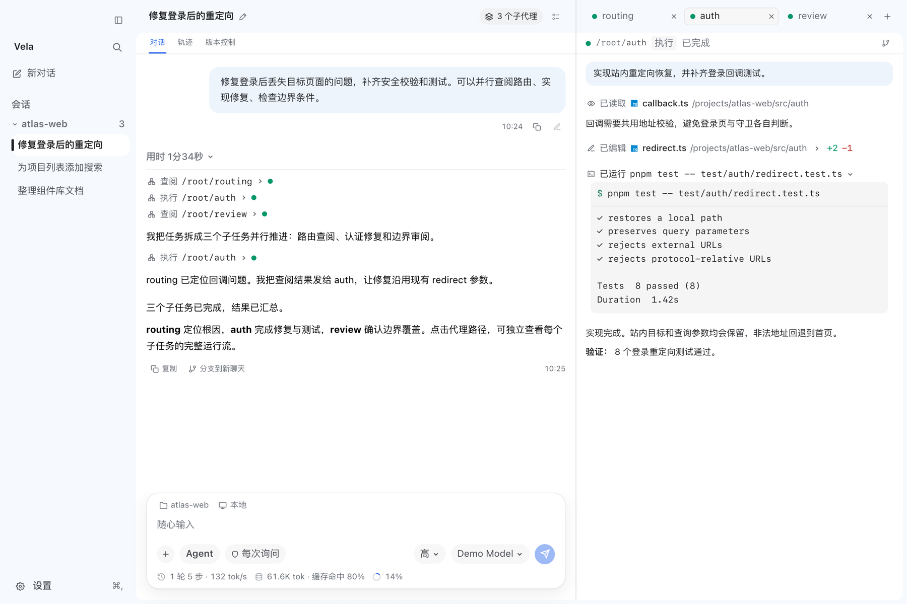

VELA · 船帆座
VelaHarness 是住在你電腦裡的 AI 編程夥伴。它在你的倉庫中讀、寫、執行，而每一步，你都看得見。
壹 · 名字
Vela 是南天的「船帆座」。古希臘人把最大的星空之船 Argo 拆成船底、船尾與船帆，帆，是推動它前行的那一部分。
寫程式像一次不確定終點的航行：風向會變，海圖會錯，總有人在半夜盯著一條紅色的報錯發呆。我們不想造一艘自己開走的無人船，只想做一面帆：把風借給你，舵仍握在你手裡。Harness 則是韁繩，讓力量有方向，也讓你隨時能勒住它。
工具該讓人更像自己，而不是把人替換掉。
貳 · 看見
好的助手不會一直說話。讀了哪些檔案、改了哪幾行、跑了什麼指令，都該被記下，卻不必擠佔你的視線。
緊湊模式把連續的工具呼叫收成一行行過程線；要細節，點開即是 diff 與輸出；做完了，整輪過程可以收起，只留結論。
readeditbash
參 · 同行
大任務來了，主代理像領隊一樣先拆開：有人查路由，有人修登入，有人挑剔地審邊界。他們各自行走，也互通消息。
點開任一子代理的名字，就能看它想了什麼、做了什麼。探索者只讀、不動檔案；能動手的成員，遵守你為這次對話設下的權限。分工，卻不失控。
spawn_agentsend_message
肆 · 回溯
我們不要求你相信 AI，只是把航海日誌還給你。
切到「軌跡」，每次思考、工具呼叫與返回依時間排開；首個 Token 的等待、生成耗時、快取命中、最初的系統提示詞，沒有一樣被藏起來。出了錯，你能順著航跡，回到它第一次偏離的地方。

伍 · 行囊
航行不只靠一面帆。這些是你出發時，已經替你備好的。
陸 · 分寸
VelaHarness 運行在你的本機，對話、帳號與執行軌跡都存於 ~/.vela，而非某個陌生的伺服器。執行權限分三檔：
需說明：這是互動式審批策略，並非作業系統級沙箱；遠端與隔離環境目前尚未支援。我們寧願把話說在前頭。
柒 · 啟航
macOS（Apple Silicon）可直接下載安裝包：最新版 v1.1.9。也可從原始碼啟動，需要 Node.js 22.19+ 與 pnpm。
git clone https://github.com/KryptonGao/VelaHarness cd VelaHarness pnpm install pnpm dev
以 Pi Agent 為運行時，Electron · React · TypeScript 構建，Apache-2.0 授權。